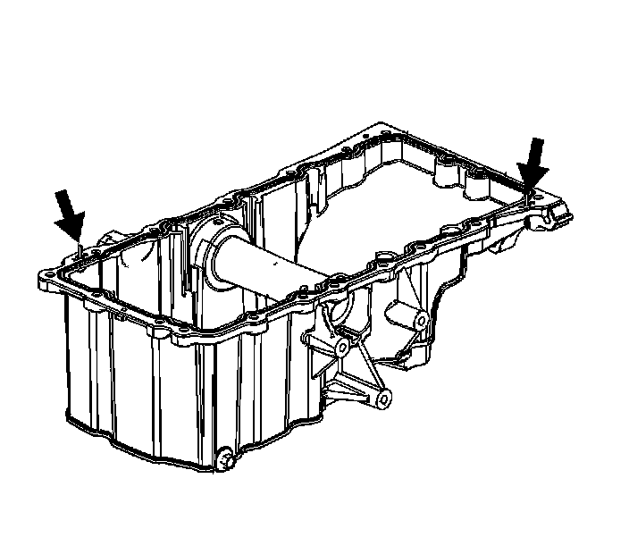
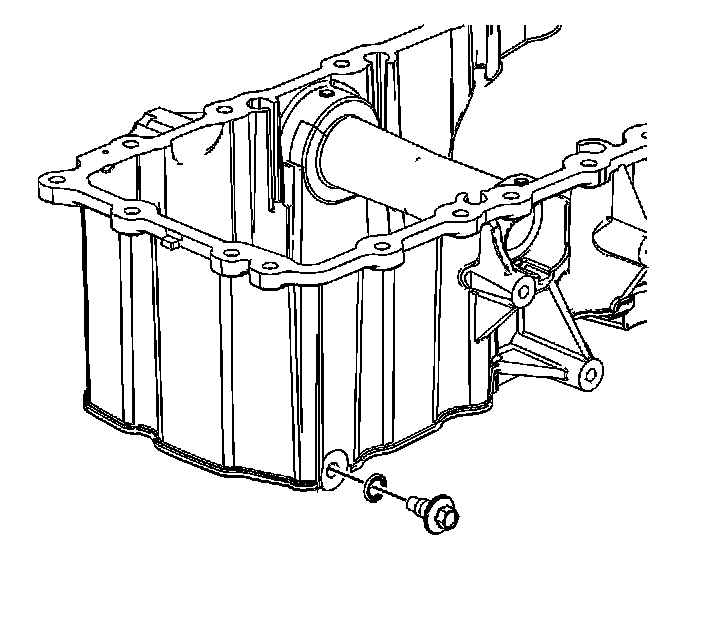

Operation CHARM
: Car repair manuals for everyone.
Home
>>
Cadillac
>>
2008
>>
SRX AWD V8-4.6L
>>
Repair and Diagnosis
>>
Engine, Cooling and Exhaust
>>
Engine
>>
Service and Repair
>>
Overhaul
>>
Repair Instructions
>>
76. Oil Pan Disassemble
76. Oil Pan Disassemble
Oil Pan
Disassemble

1.
Drill out the
oil pan gasket
rivets.
2.
Remove and discard the
oil pan gasket
.

3.
Remove the
oil pan
drain plug.
4.
Remove and discard the
oil pan
drain plug O-ring.